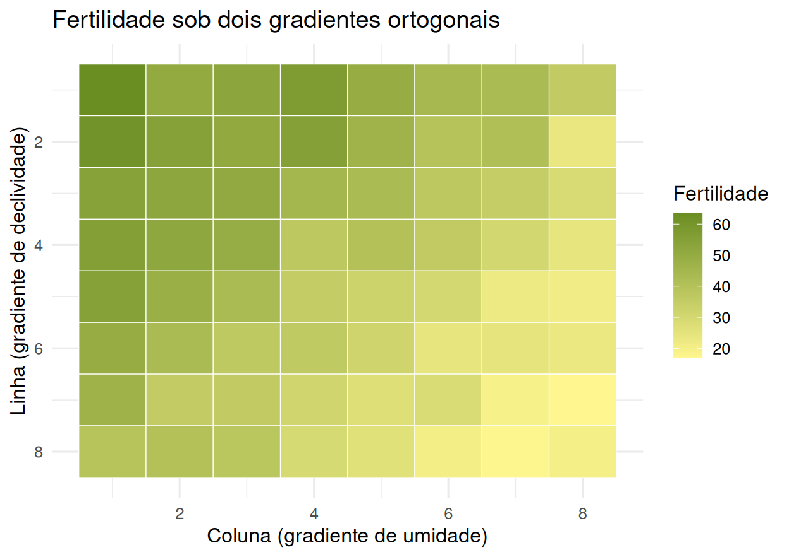
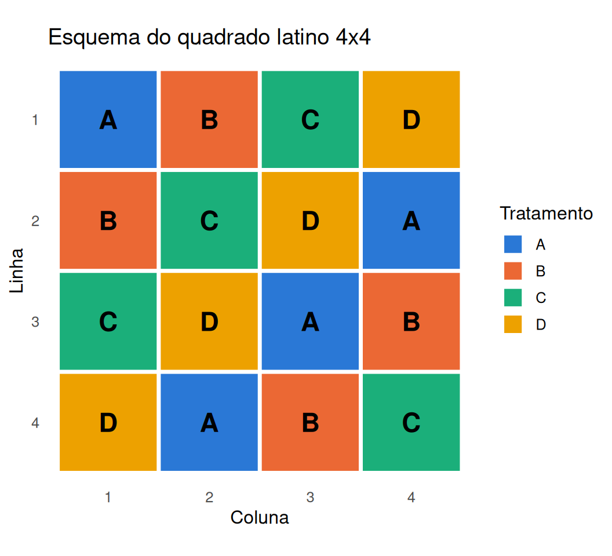
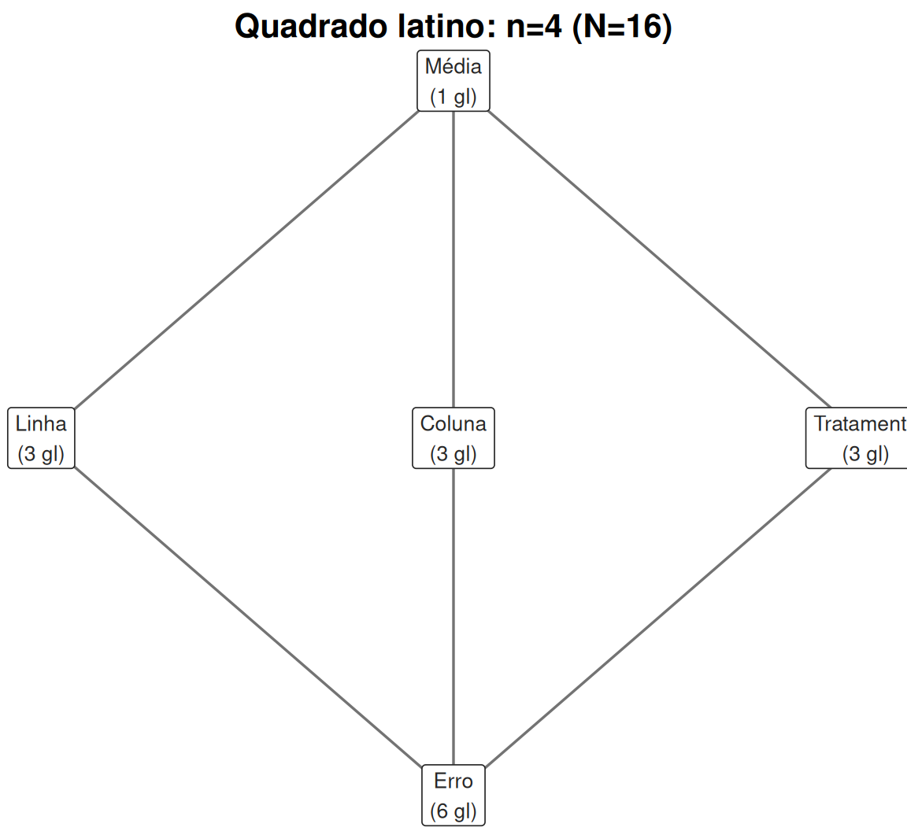
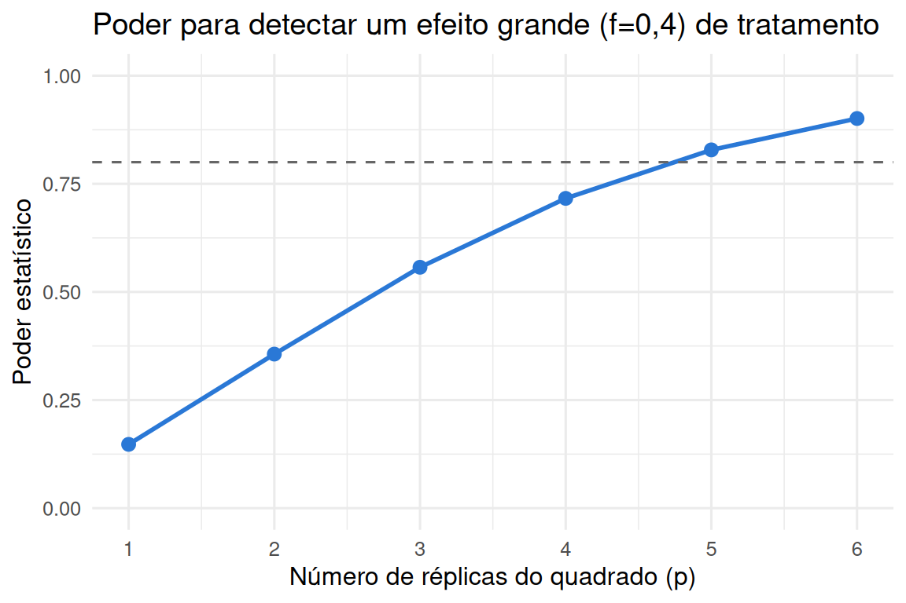
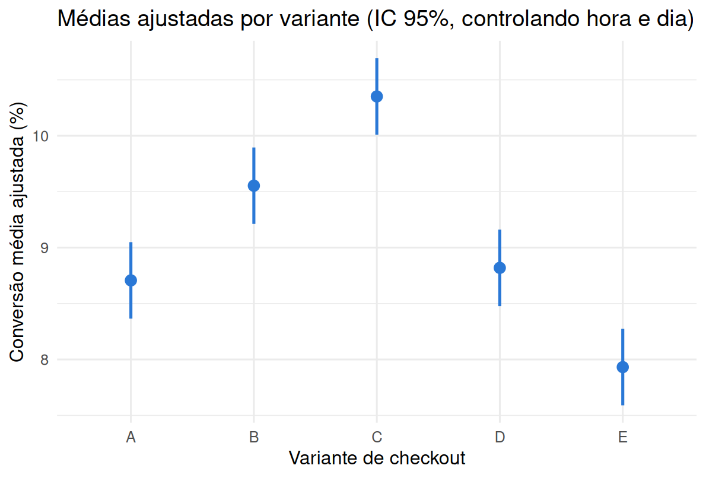
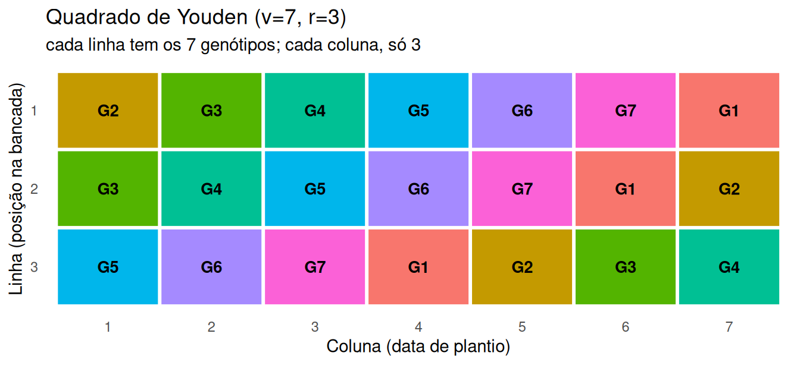

4.4 Delineamento em quadrado latino
O DBCA controla uma fonte de variação sistemática. Quando há duas fontes de bloqueio cruzadas e conhecidas — por exemplo, uma tendência de fertilidade ao longo das linhas de um talhão e, simultaneamente, ao longo das colunas —, um quadrado latino de ordem \(n\) permite controlar as duas simultaneamente usando apenas \(n^2\) unidades experimentais para comparar \(n\) tratamentos, em vez das \(n^3\) que um cruzamento completo de linha \(\times\) coluna \(\times\) tratamento exigiria. A ideia, que remonta aos ensaios de campo de Fisher em Rothamsted (Fisher, 1935b), é arranjar os \(n\) tratamentos em uma matriz \(n\times n\) de modo que cada tratamento apareça exatamente uma vez em cada linha e exatamente uma vez em cada coluna.
4.4.1 Motivação: dois gradientes ortogonais, e por que um bloqueio simples não basta
Suponha um talhão em que a fertilidade varia em duas direções ao mesmo tempo e independentemente: ao longo das linhas (por exemplo, declividade do terreno) e ao longo das colunas (por exemplo, um gradiente de umidade, perpendicular à declividade).
set.seed(48)
campo <- expand_grid(linha = 1:8, coluna = 1:8) %>%
mutate(fertilidade = 70 - 3 * linha - 4 * coluna + rnorm(n(), 0, 3))
ggplot(campo, aes(x = coluna, y = linha, fill = fertilidade)) +
geom_tile(color = "white") +
scale_fill_gradient(low = "khaki1", high = "olivedrab", name = "Fertilidade") +
scale_y_reverse() +
labs(x = "Coluna (gradiente de umidade)", y = "Linha (gradiente de declividade)",
title = "Fertilidade sob dois gradientes ortogonais") +
theme_minimal(base_size = 12)
Se bloqueássemos só por linha (faixas horizontais), cada bloco ainda conteria o gradiente inteiro de coluna, não neutralizado; se bloqueássemos só por coluna, sobraria o gradiente de linha. Nenhum bloqueio de um único fator resolve os dois simultaneamente — e um DBCA com blocos definidos pelo cruzamento linha\(\times\)coluna (cada combinação um bloco) exigiria \(n\) observações por bloco, ou seja, voltaríamos a precisar de replicação completa dentro de cada célula da grade. O quadrado latino resolve isso de forma mais econômica: em vez de tratar linha\(\times\)coluna como um único fator de blocagem com \(n^2\) níveis, ele trata linha e coluna como dois fatores de bloqueio cruzados, cada um com \(n\) níveis, e usa a restrição de que cada tratamento apareça uma vez por linha e uma vez por coluna para caber em exatamente \(n^2\) unidades — sem replicação dentro de cada célula.
4.4.2 O modelo
\[ Y_{ijk} = \mu + \rho_i + \gamma_j + \tau_k + \varepsilon_{ijk}, \]
em que \(\rho_i\) (\(i=1,\dots,n\)) é o efeito da linha, \(\gamma_j\) (\(j=1,\dots,n\)) é o efeito da coluna e \(\tau_k\) (\(k=1,\dots,n\)) é o efeito do tratamento — mas, diferentemente de um fatorial completo, apenas uma das \(n\) combinações \((i,j)\) recebe cada tratamento \(k\): o índice \(k\) é determinado pelo arranjo do quadrado latino, não varia livremente. Há apenas \(n^2\) observações, não \(n^3\).
| Fonte de variação | Graus de liberdade |
|---|---|
| Linha | \(n-1\) |
| Coluna | \(n-1\) |
| Tratamento | \(n-1\) |
| Erro | \((n-1)(n-2)\) |
| Total | \(n^2-1\) |
Como no DBCA, vale explicitar a esperança de cada quadrado médio, sob \(\sum_i\rho_i=\sum_j\gamma_j =\sum_k\tau_k=0\):
\[ \mathbb E[QM_{Linha}] = \sigma^2+\frac{n}{n-1}\sum_i\rho_i^2, \quad \mathbb E[QM_{Coluna}] = \sigma^2+\frac{n}{n-1}\sum_j\gamma_j^2, \quad \mathbb E[QM_{Trat}] = \sigma^2+\frac{n}{n-1}\sum_k\tau_k^2, \]
com \(\mathbb E[QM_{Erro}]=\sigma^2\) em qualquer caso. Como no DBCA, só o teste sobre tratamentos usa essa estrutura para inferência; linha e coluna foram escolhidas pelo delineamento, não sorteadas de uma população de linhas/colunas possíveis, então seus quadrados médios servem para purificar o erro, não para serem testados.
Um talhão experimental tem uma tendência de fertilidade ao longo de suas linhas (declividade do terreno) e, independentemente, ao longo de suas colunas (gradiente de umidade). Quatro formulações de adubo (A, B, C, D) são comparadas usando um quadrado latino $4\times4$, de modo que cada formulação apareça uma vez em cada linha e uma vez em cada coluna.
quad <- matrix(c(
"A","B","C","D",
"B","C","D","A",
"C","D","A","B",
"D","A","B","C"
), nrow = 4, byrow = TRUE)
quad # cada linha e cada coluna contém A, B, C, D exatamente uma vez## [,1] [,2] [,3] [,4]
## [1,] "A" "B" "C" "D"
## [2,] "B" "C" "D" "A"
## [3,] "C" "D" "A" "B"
## [4,] "D" "A" "B" "C"O arranjo abstrato de letras fica mais concreto como um diagrama: cada célula da grade linha\(\times\)coluna recebe a cor do tratamento que lhe cabe, com a letra sobreposta para que a identidade do tratamento nunca dependa só da cor.

Cada linha da grade (lida da esquerda para a direita) contém as quatro letras exatamente uma vez, e o mesmo vale para cada coluna (lida de cima para baixo) — é essa dupla restrição, visível de imediato na figura, que define um quadrado latino. Ler o diagrama por linha diz que fixação em qualquer talhão (linha) já garante que os quatro adubos serão testados; ler por coluna diz o mesmo para qualquer data de aplicação.
4.4.3 Diagrama de Hasse do quadrado latino: três fatores cruzados dois a dois
O quadrado latino é o primeiro delineamento deste livro com três fatores no mesmo nível do diagrama de Hasse, em vez de dois — Linha, Coluna e Tratamento são cruzados dois a dois (nenhum refina o outro), e os três convergem diretamente no Erro, pela mesma razão geométrica já vista no DBCA: sem repetição dentro de cada célula linha\(\times\)coluna, não sobra grau de liberdade para nenhuma interação entre eles.
nos_ql <- tibble(
termo = c("Média", "Linha", "Coluna", "Tratamento", "Erro"),
df = c(1, 4 - 1, 4 - 1, 4 - 1, (4 - 1) * (4 - 2)),
x = c(0, -1.6, 0, 1.6, 0),
y = c(4, 3, 3, 3, 2)
)
arestas_ql <- tibble(
de = c("Média", "Média", "Média", "Linha", "Coluna", "Tratamento"),
para = c("Linha", "Coluna", "Tratamento", "Erro", "Erro", "Erro")
)
plot_hasse(nos_ql, arestas_ql, titulo = "Quadrado latino: n=4 (N=16)")
Figure 4.3: Diagrama de Hasse do quadrado latino 4x4 (exemplo dos quatro adubos): n=4 linhas, n=4 colunas, n=4 tratamentos, N=n^2=16. Linha, Coluna e Tratamento aparecem no mesmo nível – cruzados dois a dois – e convergem direto no Erro, sem nó de interação, pela mesma razão do DBCA (seção anterior).
Os cinco nós somam \(1+3+3+3+6=16=n^2\): Linha, Coluna e Tratamento consomem \(n-1=3\) graus de liberdade cada um (idêntico entre si, porque os três têm exatamente \(n\) níveis), e sobram \((n-1)(n-2)=3\times2=6\) para o Erro — a mesma fórmula da tabela de ANOVA acima, aqui obtida por contagem direta no diagrama: \(n^2\) caselas menos os \(1+3+3+3=10\) graus de liberdade já “explicados” pelos quatro nós superiores. Note o padrão que se repete a cada capítulo: quanto mais fatores cruzados sem repetição dentro de casela, menos graus de liberdade sobram para o erro — um quadrado latino de ordem \(n\) “gasta” \(3(n-1)\) graus de liberdade em estrutura antes de chegar ao erro, contra apenas \((t-1)+(b-1)\) do DBCA de dois fatores.
4.4.4 Aleatorização de um quadrado latino (Yates, 1933)
O quadro quad acima foi escrito de próprio punho, na ordem “óbvia” — mas usar sempre o mesmo
arranjo fixo reintroduz exatamente o problema que a aleatorização deveria evitar: se, por exemplo,
o adubo A está sempre na diagonal principal, e a diagonal principal coincidir por acaso com alguma
característica não modelada do talhão (digamos, um carreador de máquinas), o efeito de A ficaria
confundido com essa característica em todo experimento que reusasse esse quadrado.
Yates (1933) (ver Fisher (1935b) para o contexto experimental) propôs um
procedimento de aleatorização em quatro etapas que garante que a atribuição de tratamentos a
células não dependa de nenhuma escolha arbitrária do pesquisador:
- Partir de um quadrado latino reduzido (primeira linha e primeira coluna em ordem “alfabética” \(1,2,\dots,n\)) — existe pelo menos um para toda ordem \(n\), e é fácil de escrever (por exemplo, a construção cíclica \(\text{quad}[i,j] = ((i+j-2)\bmod n)+1\)).
- Permutar aleatoriamente as linhas do quadrado reduzido.
- Permutar aleatoriamente as colunas do resultado.
- Sortear aleatoriamente quais tratamentos reais correspondem a cada símbolo \(1,\dots,n\).
aleatorizar_quadrado_latino <- function(n, tratamentos, seed = NULL) {
if (!is.null(seed)) set.seed(seed)
# Passo 0: quadrado latino reduzido, construção cíclica
reduzido <- outer(0:(n - 1), 0:(n - 1), function(i, j) ((i + j) %% n) + 1)
# Passos 2-3: permutar linhas e colunas independentemente
perm_linhas <- sample(n)
perm_colunas <- sample(n)
design_idx <- reduzido[perm_linhas, perm_colunas]
# Passo 4: atribuir tratamentos reais aos símbolos 1..n
atrib <- sample(tratamentos)
design <- matrix(atrib[design_idx], nrow = n)
list(design = design, perm_linhas = perm_linhas, perm_colunas = perm_colunas, atrib = atrib)
}
set.seed(2026)
resultado_yates <- aleatorizar_quadrado_latino(4, c("A", "B", "C", "D"))
resultado_yates$design## [,1] [,2] [,3] [,4]
## [1,] "D" "C" "B" "A"
## [2,] "B" "A" "C" "D"
## [3,] "C" "D" "A" "B"
## [4,] "A" "B" "D" "C"# a aleatorização não pode violar a definição de quadrado latino
d <- resultado_yates$design
c(linhas_ok = all(apply(d, 1, function(r) length(unique(r)) == 4)),
colunas_ok = all(apply(d, 2, function(cl) length(unique(cl)) == 4)))## linhas_ok colunas_ok
## TRUE TRUEO quadrado gerado por essa execução (D C B A na primeira linha) é apenas um entre muitos igualmente válidos e igualmente prováveis sob o procedimento de Yates — rodar novamente com outra semente produziria outro arranjo, também válido. É esse espaço de arranjos possíveis, e não um único quadrado fixo, que sustenta a distribuição de referência da aleatorização por trás do teste \(F\): o argumento de Neyman-Rubin da Seção 4.1 se aplica aqui do mesmo modo, só que a aleatorização agora é restrita simultaneamente por linha e por coluna, não apenas por bloco.
efeito_linha <- c(0, 2, -1, 1)
efeito_coluna <- c(0, -2, 1, 1)
efeito_trat <- c(A = 0, B = 3, C = 5, D = 1)
set.seed(11)
dados_ql <- expand_grid(linha = 1:4, coluna = 1:4) %>%
mutate(
tratamento = factor(mapply(function(i, j) quad[i, j], linha, coluna),
levels = c("A","B","C","D")),
linha = factor(linha), coluna = factor(coluna),
resposta = round(20 + efeito_linha[as.integer(linha)] + efeito_coluna[as.integer(coluna)] +
efeito_trat[as.character(tratamento)] + rnorm(n(), 0, 1.2), 2)
)
mod_ql <- aov(resposta ~ linha + coluna + tratamento, data = dados_ql)
anova(mod_ql) %>% broom::tidy() %>%
kable(digits = 4, caption = "ANOVA do quadrado latino 4x4 (dados simulados)") %>%
kable_styling(full_width = FALSE)| term | df | sumsq | meansq | statistic | p.value |
|---|---|---|---|---|---|
| linha | 3 | 43.6726 | 14.5575 | 10.7030 | 0.0080 |
| coluna | 3 | 27.0569 | 9.0190 | 6.6309 | 0.0247 |
| tratamento | 3 | 56.8363 | 18.9454 | 13.9291 | 0.0041 |
| Residuals | 6 | 8.1608 | 1.3601 | NA | NA |
Vale explicitar a matriz de delineamento aqui: agora \(X=[\mathbf 1\mid X_{linha}\mid X_{coluna} \mid X_{trat}]\) tem três blocos de colunas, e continua sem nenhum produto cruzado entre eles — essa ortogonalidade de blocos de colunas é exatamente o que torna o quadrado latino “econômico”: ele estima três efeitos principais com \(n^2\) observações porque abre mão de qualquer termo de interação entre linha, coluna e tratamento.
X_ql <- model.matrix(mod_ql)
dim(X_ql) # 16 linhas, 1 + 3 (linha) + 3 (coluna) + 3 (tratamento) = 10 colunas## [1] 16 10## (Intercept) linha2 linha3 linha4 coluna2 coluna3 coluna4 tratamentoB
## 1 1 0 0 0 0 0 0 0
## 2 1 0 0 0 1 0 0 1
## 3 1 0 0 0 0 1 0 0
## 4 1 0 0 0 0 0 1 0
## tratamentoC tratamentoD
## 1 0 0
## 2 0 0
## 3 1 0
## 4 0 1Com apenas 16 unidades experimentais, controlamos duas fontes de variação e ainda testamos o efeito de adubação (\(F_{3,6}=13{,}9\), \(p=0{,}004\)) — um fatorial completo de linha \(\times\) coluna \(\times\) tratamento precisaria de \(4^3=64\) unidades para o mesmo número de níveis. O preço é a suposição extra de que não há interação entre linha, coluna e tratamento: se o efeito de uma adubação de fato depender da combinação específica de declividade e umidade, o quadrado latino confunde essa interação com o erro experimental, sem meios de separá-las.
4.4.5 Quadrados latinos replicados
Com \(n\) pequeno (tipicamente \(n\le5\)), o quadrado latino sozinho deixa poucos graus de liberdade para o erro — apenas \((n-1)(n-2)\), que é \(6\) para \(n=4\) e apenas \(2\) para \(n=3\). Replicar o quadrado latino em \(p\) conjuntos independentes de unidades experimentais (por exemplo, \(p\) fazendas ou \(p\) safras, cada uma com suas próprias linhas e colunas) aumenta os graus de liberdade do erro sem aumentar \(n\). Quando cada réplica tem suas próprias linhas e colunas (o caso mais comum, em que os blocos de linha/coluna não são os mesmos de uma réplica para outra):
| Fonte de variação | Graus de liberdade |
|---|---|
| Réplicas | \(p-1\) |
| Linhas (dentro de réplica) | \(p(n-1)\) |
| Colunas (dentro de réplica) | \(p(n-1)\) |
| Tratamento | \(n-1\) |
| Erro | \((n-1)[p(n-1)-1]\) |
| Total | \(pn^2-1\) |
n <- 4; p <- 2
dados_rep <- map_dfr(1:p, function(rep_id) {
expand_grid(linha = 1:4, coluna = 1:4) %>%
mutate(
replica = rep_id,
tratamento = factor(mapply(function(i, j) quad[i, j], linha, coluna),
levels = c("A","B","C","D")),
linha_id = factor(paste0(rep_id, "-", linha)),
coluna_id = factor(paste0(rep_id, "-", coluna))
)
})
set.seed(22)
dados_rep <- dados_rep %>%
mutate(
replica = factor(replica),
resposta = round(20 + rnorm(n(), 0, 1) + efeito_trat[as.character(tratamento)] +
as.numeric(replica) * 1.5 + rnorm(n(), 0, 1.2), 2)
)
mod_rep <- aov(resposta ~ replica + linha_id + coluna_id + tratamento, data = dados_rep)
anova(mod_rep) %>% broom::tidy() %>%
kable(digits = 4, caption = "ANOVA de duas réplicas do quadrado latino 4x4") %>%
kable_styling(full_width = FALSE)| term | df | sumsq | meansq | statistic | p.value |
|---|---|---|---|---|---|
| replica | 1 | 6.2747 | 6.2747 | 3.2820 | 0.0901 |
| linha_id | 6 | 3.8766 | 0.6461 | 0.3379 | 0.9061 |
| coluna_id | 6 | 31.1797 | 5.1966 | 2.7182 | 0.0544 |
| tratamento | 3 | 116.8563 | 38.9521 | 20.3744 | 0.0000 |
| Residuals | 15 | 28.6772 | 1.9118 | NA | NA |
Confira: \(gl_{Erro} = (n-1)[p(n-1)-1] = 3\times(2\times3-1) = 15\), exatamente o valor produzido pelo ajuste acima — replicar duas vezes elevou os graus de liberdade do erro de 6 para 15, tornando o teste sobre tratamentos bem mais sensível do que seria com um único quadrado.
4.4.6 Quantas réplicas? Uma análise de poder
A pergunta prática — “vale a pena replicar, e quantas vezes?” — pode ser respondida antes de coletar qualquer dado, por análise de poder. A estatística de teste do quadrado latino replicado segue, sob \(H_1\), uma distribuição \(F\) não central com parâmetro de não-centralidade \(\lambda = N f^2\), em que \(N=pn^2\) é o número total de unidades e \(f\) é o tamanho de efeito de Cohen para o fator de tratamento — a mesma convenção usada em análises de poder de ANOVA de um fator (\(f=0{,}10\): efeito pequeno; \(f=0{,}25\): médio; \(f=0{,}40\): grande).
poder_ql_replicado <- function(n, p, alpha = 0.05, f = 0.4) {
gl1 <- n - 1
gl2 <- (n - 1) * (p * (n - 1) - 1)
N <- p * n^2
ncp <- N * f^2
f_crit <- qf(1 - alpha, gl1, gl2)
1 - pf(f_crit, gl1, gl2, ncp)
}
tab_poder <- tibble(p = 1:6) %>%
mutate(
gl_erro = (4 - 1) * (p * (4 - 1) - 1),
poder = poder_ql_replicado(n = 4, p = p, f = 0.4)
)
tab_poder %>%
kable(digits = 3, caption = "Poder do teste de tratamento vs. número de réplicas (n=4, f=0,4)") %>%
kable_styling(full_width = FALSE)| p | gl_erro | poder |
|---|---|---|
| 1 | 6 | 0.148 |
| 2 | 15 | 0.356 |
| 3 | 24 | 0.557 |
| 4 | 33 | 0.716 |
| 5 | 42 | 0.828 |
| 6 | 51 | 0.901 |
ggplot(tab_poder, aes(x = p, y = poder)) +
geom_line(color = "#2a78d6", linewidth = 1) +
geom_point(size = 2.6, color = "#2a78d6") +
geom_hline(yintercept = 0.8, linetype = "dashed", color = "grey40") +
scale_x_continuous(breaks = 1:6) +
labs(x = "Número de réplicas do quadrado (p)", y = "Poder estatístico",
title = "Poder para detectar um efeito grande (f=0,4) de tratamento") +
ylim(0, 1) +
theme_minimal(base_size = 12)
Com um único quadrado (\(p=1\), \(gl_{Erro}=6\)), o poder para detectar um efeito grande é de apenas
15% — mesmo um efeito real e
substantivo tem boa chance de passar despercebido. Duas réplicas (o exemplo acima) elevam o poder
para 36%; são necessárias
5 réplicas para cruzar a convenção usual de
poder \(\ge0{,}80\). Essa é exatamente a natureza da decisão prática de delineamento: replicar tem
custo (mais unidades experimentais, mais tempo, mais recursos), e a análise de poder converte
“quantas réplicas?” de uma escolha arbitrária em uma conta explícita, condicionada ao menor efeito
que se considera cientificamente relevante detectar. Efeitos menores (\(f=0{,}25\) ou \(f=0{,}10\))
exigiriam ainda mais réplicas para o mesmo poder — vale repetir o cálculo acima variando f antes
de decidir o tamanho do experimento.
4.4.7 Eficiência relativa do quadrado latino frente ao DBCA e ao DCA
A Seção 4.1 definiu a eficiência relativa do DBCA frente ao DCA comparando a variância por unidade experimental que cada delineamento produziria. A mesma lógica formal se estende ao quadrado latino — só que agora há duas fontes de bloqueio (linha e coluna), e cabe perguntar não só “valeu a pena blocar?”, mas “qual das duas fontes carregou mais peso?”. A comparação mais direta aqui é, na verdade, exata, sem nenhuma aproximação: como \(SQ_{Total}\) não depende de qual modelo foi ajustado, a soma de quadrados que um DCA hipotético (que ignorasse linha e coluna) atribuiria ao erro é exatamente o que sobra depois de remover só o tratamento, \[ SQ_{Erro}^{(DCA)} = SQ_{Total} - SQ_{Trat} = SQ_{Linha} + SQ_{Coluna} + SQ_{Erro}^{(QL)}, \] com \(gl_{Erro}^{(DCA)} = n^2-1-(n-1) = n(n-1)\) graus de liberdade. Substituindo \(SQ_{Linha}=(n-1)QM_{Linha}\), \(SQ_{Coluna}=(n-1)QM_{Coluna}\) e \(SQ_{Erro}^{(QL)}=(n-1)(n-2)QM_{Erro}\) e dividindo pelos graus de liberdade, \[ QM_{Erro}^{(DCA)} = \frac{QM_{Linha}+QM_{Coluna}+(n-2)\,QM_{Erro}}{n}, \qquad ER(QL,DCA) = \frac{QM_{Erro}^{(DCA)}}{QM_{Erro}^{(QL)}}. \] O mesmo raciocínio, aplicado a um DBCA hipotético que usasse só uma das duas fontes de bloqueio (digamos, só linha, absorvendo coluna de volta ao erro), dá \[ QM_{Erro}^{(DBCA\text{-linha})} = \frac{QM_{Coluna}+(n-2)\,QM_{Erro}}{n-1}, \qquad ER(QL,DBCA\text{-linha}) = \frac{QM_{Erro}^{(DBCA\text{-linha})}}{QM_{Erro}^{(QL)}}, \] e simetricamente para \(ER(QL,DBCA\text{-coluna})\), trocando \(QM_{Coluna}\) por \(QM_{Linha}\). Diferente da fórmula de Fisher usada na Seção 4.1 (que corrige o pequeno viés de usar uma variância estimada, com poucos graus de liberdade, para julgar precisão futura), estas três razões são identidades algébricas exatas — seguem diretamente de como \(SQ_{Total}\) se particiona entre fontes ortogonais, não de uma aproximação assintótica.
tab_ql <- anova(mod_ql)
QM_linha_ql <- tab_ql["linha", "Mean Sq"]
QM_coluna_ql <- tab_ql["coluna", "Mean Sq"]
QM_erro_ql <- tab_ql["Residuals", "Mean Sq"]
n_ql <- 4
QM_erro_dca <- (QM_linha_ql + QM_coluna_ql + (n_ql - 2) * QM_erro_ql) / n_ql
ER_dca <- QM_erro_dca / QM_erro_ql
QM_erro_dbca_linha <- (QM_coluna_ql + (n_ql - 2) * QM_erro_ql) / (n_ql - 1)
ER_dbca_linha <- QM_erro_dbca_linha / QM_erro_ql
QM_erro_dbca_coluna <- (QM_linha_ql + (n_ql - 2) * QM_erro_ql) / (n_ql - 1)
ER_dbca_coluna <- QM_erro_dbca_coluna / QM_erro_ql
tibble(
Comparação = c("QL vs. DCA (ignora linha e coluna)",
"QL vs. DBCA (só bloqueia linha)",
"QL vs. DBCA (só bloqueia coluna)"),
`Eficiência relativa` = c(ER_dca, ER_dbca_linha, ER_dbca_coluna)
) %>%
kable(digits = 2, caption = "Eficiência relativa do quadrado latino 4x4 das quatro adubações") %>%
kable_styling(full_width = FALSE)| Comparação | Eficiência relativa |
|---|---|
| QL vs. DCA (ignora linha e coluna) | 4.83 |
| QL vs. DBCA (só bloqueia linha) | 2.88 |
| QL vs. DBCA (só bloqueia coluna) | 4.23 |
O quadrado latino é claramente a escolha certa neste experimento: comparado a um DCA que ignorasse os dois gradientes, seria preciso 4.8 vezes mais unidades experimentais para igualar sua precisão; mesmo comparado a um DBCA que já controlasse a declividade (linha), ainda seria preciso 2.9 vezes mais. O padrão \(ER(QL,DBCA\text{-linha}) < ER(QL,DBCA\text{-coluna})\) é informativo por si só: como \(QM_{Linha}=\) 14.56 é maior que \(QM_{Coluna}=\) 9.02 na Tabela de ANOVA acima, é a linha (declividade) que carrega mais heterogeneidade real — um DBCA que já a controlasse deixaria pouca “sobra” para o quadrado latino explicar ao acrescentar a coluna, exatamente o que a eficiência relativa menor (2.9 contra 4.2) mostra. É esse tipo de decomposição — não apenas “o quadrado latino ajudou?”, mas “qual das duas fontes de bloqueio carregou mais peso?” — que a extensão da eficiência relativa a duas dimensões permite responder.
4.4.8 Um segundo exemplo completo: cinco variantes de checkout em e-commerce
Para fixar a notação matricial do quadrado latino em um domínio bem diferente da agricultura — ciência de dados, o mesmo cenário que o Capítulo 8 retomará sob a ótica de testes A/B —, considere um segundo exemplo completo, agora com \(n=5\).
Uma equipe de produto quer comparar cinco variantes (A–E) do botão de finalizar compra em um site de e-commerce, medindo a taxa de conversão (%). A conversão varia sistematicamente tanto pela hora do dia (cinco faixas horárias) quanto pelo dia da semana (cinco dias úteis) — duas fontes de bloqueio conhecidas e cruzadas, o cenário exato de um quadrado latino $5\times5$: cada variante é exibida exatamente uma vez em cada faixa horária e uma vez em cada dia da semana, ao longo de 25 janelas de exibição.
n5 <- 5
quad5 <- matrix(LETTERS[outer(0:(n5-1), 0:(n5-1), function(i, j) ((i + j) %% n5) + 1)], nrow = n5)
quad5 # construção cíclica: quad5[i,j] = letra ((i+j) mod 5)## [,1] [,2] [,3] [,4] [,5]
## [1,] "A" "B" "C" "D" "E"
## [2,] "B" "C" "D" "E" "A"
## [3,] "C" "D" "E" "A" "B"
## [4,] "D" "E" "A" "B" "C"
## [5,] "E" "A" "B" "C" "D"ef_hora <- c(0, 0.5, 1.2, 0.8, -0.3) # efeito de faixa horária (pontos percentuais)
ef_dia <- c(0, -0.4, 0.2, 0.6, -0.2) # efeito de dia da semana
ef_var <- c(A = 0, B = 0.9, C = 1.6, D = 0.4, E = -0.5) # efeito de variante
set.seed(2025)
dados_ec <- expand_grid(hora = 1:n5, dia = 1:n5) %>%
mutate(
variante = factor(mapply(function(i, j) quad5[i, j], hora, dia), levels = LETTERS[1:5]),
hora = factor(hora), dia = factor(dia),
conversao = round(8 + ef_hora[as.integer(hora)] + ef_dia[as.integer(dia)] +
ef_var[as.character(variante)] + rnorm(n(), 0, 0.35), 3)
)
mod_ec <- aov(conversao ~ hora + dia + variante, data = dados_ec)
anova(mod_ec) %>% broom::tidy() %>%
kable(digits = 4, caption = "ANOVA do quadrado latino 5x5 (variantes de checkout)") %>%
kable_styling(full_width = FALSE)| term | df | sumsq | meansq | statistic | p.value |
|---|---|---|---|---|---|
| hora | 4 | 4.5980 | 1.1495 | 9.3376 | 0.0011 |
| dia | 4 | 3.7466 | 0.9366 | 7.6084 | 0.0027 |
| variante | 4 | 16.8330 | 4.2083 | 34.1842 | 0.0000 |
| Residuals | 12 | 1.4773 | 0.1231 | NA | NA |
Como no exemplo anterior, a matriz de delineamento tem a forma em blocos de colunas \(X=[\mathbf 1\mid X_{hora}\mid X_{dia}\mid X_{variante}]\), agora com \(n-1=4\) colunas indicadoras para cada um dos três fatores (parametrização de referência): \(1+4+4+4=13\) colunas para \(N=n^2=25\) observações.
## [1] 25 13O posto de \(X\) tem que ser exatamente 13 — nenhuma coluna é combinação linear das demais, porque não há produto cruzado entre os três blocos de colunas. A matriz de projeção \(H=X(X'X)^{-1}X'\) (Capítulo 2) confirma isso diretamente: seu traço, que mede a dimensão do subespaço de \(\mathbb R^{25}\) em que \(Y\) é projetado, coincide com o posto de \(X\).
H_ec <- X_ec %*% solve(t(X_ec) %*% X_ec) %*% t(X_ec)
c(traco_H = sum(diag(H_ec)), posto_X = qr(X_ec)$rank)## traco_H posto_X
## 13 13Os três testes-\(F\) são significativos — hora do dia (\(F=\) 9.34, \(p=\) 0.0011), dia da semana (\(F=\) 7.61, \(p=\) 0.0027) e, principalmente, variante (\(F=\) 34.18, \(p<0{,}001\)) —, confirmando que as duas fontes de bloqueio de fato carregavam variação real (o quadrado latino não gastou seus graus de liberdade à toa) e que as variantes diferem entre si.
library(emmeans)
emm_var <- emmeans(mod_ec, ~ variante)
emm_df <- as_tibble(emm_var)
ggplot(emm_df, aes(x = variante, y = emmean)) +
geom_pointrange(aes(ymin = lower.CL, ymax = upper.CL), color = "#2a78d6", linewidth = 0.9) +
labs(x = "Variante de checkout", y = "Conversão média ajustada (%)",
title = "Médias ajustadas por variante (IC 95%, controlando hora e dia)") +
theme_minimal(base_size = 12)
As médias ajustadas separam claramente a variante C (10.35%, a melhor) da variante E (7.93%, a pior) — os intervalos de 95% não se sobrepõem entre as duas, evidência forte de que a diferença é real e não ruído de amostragem. Note o paralelo direto com um teste A/B: se a equipe tivesse testado só C contra A sem controlar hora e dia (um DCA disfarçado de “teste A/B simples”), o mesmo efeito real de variante teria ficado misturado com a variação sistemática de tráfego ao longo do dia e da semana — o Capítulo 8 retoma exatamente esse ponto ao discutir por que testes A/B ingênuos, sem nenhum controle local, podem levar a conclusões erradas mesmo com milhares de observações.
4.4.9 Quadrados de Youden: quando o quadrado latino não pode ser completo
Um quadrado latino exige \(n\) linhas e \(n\) colunas — mas, às vezes, o número de “posições” disponíveis em uma das duas direções é menor que o número de tratamentos: um viveiro tem \(v=7\) variedades a comparar, mas a bancada de casa de vegetação só tem \(r=3\) posições físicas por data de plantio; um painel sensorial quer balancear \(v\) produtos contra \(v\) sessões, mas cada degustador (linha) só avalia \(r<v\) produtos por sessão. Um quadrado de Youden resolve exatamente esse caso: é um quadrado latino incompleto, em que uma das duas dimensões de bloqueio (aqui, coluna) tem menos níveis do que tratamentos.
Formalmente, um quadrado de Youden com parâmetros \((v,r)\), \(r<v\), é um arranjo retangular de \(r\) linhas por \(v\) colunas, com \(v\) tratamentos, tal que:
- cada linha contém cada um dos \(v\) tratamentos exatamente uma vez — como em um quadrado latino completo, a linha não é incompleta;
- cada coluna contém apenas \(r\) dos \(v\) tratamentos, e o conjunto de tratamentos que aparece em cada coluna forma um bloco de um delineamento em blocos incompletos balanceados (Seção 4.3) simétrico, com parâmetros \(t=b=v\), \(k=r\) e \(\lambda = \dfrac{r(r-1)}{v-1}\).
Em outras palavras: um quadrado de Youden é, ao mesmo tempo, um quadrado latino em relação a linha\(\times\)tratamento (ortogonalidade completa) e um BIB em relação a coluna\(\times\)tratamento (balanceamento incompleto) — as duas estruturas dos capítulos anterior e desta seção, combinadas em um único delineamento. Com \(N=rv\) unidades em vez das \(v^2\) que um quadrado latino completo exigiria, o modelo é \[ Y_{ijk} = \mu + \rho_i + \gamma_j + \tau_k + \varepsilon_{ijk}, \qquad i=1,\dots,r,\ \ j=1,\dots,v, \] com \(k\) novamente determinado pelo arranjo, não livre. Como linha é ortogonal a tratamento (item 1 acima), a soma de quadrados de tratamento não precisa de ajuste em relação à linha — só em relação à coluna, exatamente com a fórmula de \(Q_i\) e \(SQ_{Trat(ajustada)}\) da Seção 4.3, usando \(T_{i\cdot}\) (soma do tratamento \(i\)) e \(B_{\cdot j}\) (soma da coluna \(j\)) no lugar de bloco: \[ Q_i = T_{i\cdot} - \frac{1}{r}\sum_{j:\, i\,\in\,\text{coluna }j} B_{\cdot j}, \qquad SQ_{\text{Trat(ajustada)}} = \frac{r\sum_{i=1}^v Q_i^2}{\lambda v}. \]
| Fonte de variação | Graus de liberdade |
|---|---|
| Linha | \(r-1\) |
| Coluna | \(v-1\) |
| Tratamento (ajustado) | \(v-1\) |
| Erro | \((v-1)(r-2)\) |
| Total | \(rv-1\) |
Um experimento de casa de vegetação compara sete genótipos de soja ($v=7$) ao longo de sete datas de plantio (colunas), mas a bancada só comporta três vasos por data ($r=3$). Cada genótipo ainda deve aparecer exatamente uma vez em cada "posição" (linha) da bancada, e cada par de genótipos deve coocorrer no mesmo número de datas — a estrutura de um quadrado de Youden $(v,r)=(7,3)$.
A construção clássica parte de um conjunto de diferenças perfeito — aqui, \(D=\{1,2,4\}\pmod 7\) (os resíduos quadráticos módulo 7): a célula \((i,j)\) recebe o tratamento \((d_i+j)\bmod 7\), para \(d_i\in D\) (na ordem fixa \(1,2,4\)) e \(j=0,\dots,6\). Ler ao longo de uma linha \(i\) fixa faz \(j\) percorrer \(0,\dots,6\) e, portanto, \((d_i+j)\bmod7\) percorre todos os 7 tratamentos — a propriedade (1) acima. Ler ao longo de uma coluna \(j\) fixa dá o bloco \(D+j\pmod7\), uma translação cíclica de \(D\): como \(D\) é um conjunto de diferenças perfeito, todo par de tratamentos coocorre em exatamente \(\lambda=1\) coluna — a propriedade (2).
v_y <- 7; r_y <- 3
D <- c(1, 2, 4) # resíduos quadráticos mod 7 (conjunto de diferenças)
genotipos <- paste0("G", 1:7)
Y <- matrix(NA_integer_, nrow = r_y, ncol = v_y)
for (i in 1:r_y) for (j in 0:(v_y - 1)) Y[i, j + 1] <- (D[i] + j) %% v_y + 1
rownames(Y) <- paste0("linha", 1:r_y); colnames(Y) <- paste0("data", 1:v_y)
matrix(genotipos[Y], nrow = r_y, dimnames = dimnames(Y))## data1 data2 data3 data4 data5 data6 data7
## linha1 "G2" "G3" "G4" "G5" "G6" "G7" "G1"
## linha2 "G3" "G4" "G5" "G6" "G7" "G1" "G2"
## linha3 "G5" "G6" "G7" "G1" "G2" "G3" "G4"# verificação: cada linha e uma permutação dos 7 genotipos; cada par coocorre 1 vez
linhas_ok <- all(apply(Y, 1, function(lin) length(unique(lin)) == v_y))
pares <- combn(1:v_y, 2)
lambda_obs <- range(apply(pares, 2, function(p) sum(sapply(1:v_y, function(j) all(p %in% Y[, j])))))
c(linhas_sao_permutacoes = linhas_ok, lambda_min = lambda_obs[1], lambda_max = lambda_obs[2])## linhas_sao_permutacoes lambda_min lambda_max
## 1 1 1
O contraste com o quadrado latino completo salta aos olhos: cada linha ainda contém todos os 7 genótipos (lida na horizontal, a figura mostra os 7 rótulos diferentes), mas cada coluna só mostra 3 dos 7 (a “incompletude” que dá nome ao delineamento) — e ainda assim, por construção via o conjunto de diferenças, todo par de genótipos aparece junto em exatamente uma coluna.
ef_trat_y <- c(G1 = 0, G2 = 1.5, G3 = 3, G4 = -1, G5 = 2, G6 = 0.5, G7 = -2)
ef_linha_y <- c(0, 1, -1)
ef_col_y <- c(0, 0.5, -0.5, 1, -1, 0.3, -0.3)
set.seed(48)
dados_youden <- expand_grid(linha = 1:r_y, coluna = 1:v_y) %>%
mutate(
trat = factor(genotipos[mapply(function(i, j) Y[i, j], linha, coluna)], levels = genotipos),
linha = factor(linha), coluna = factor(coluna),
altura = round(30 + ef_linha_y[as.integer(linha)] + ef_col_y[as.integer(coluna)] +
ef_trat_y[as.character(trat)] + rnorm(n(), 0, 1), 2)
)
mod_youden <- aov(altura ~ linha + coluna + trat, data = dados_youden)
anova(mod_youden) %>% broom::tidy() %>%
kable(digits = 4, caption = "ANOVA do quadrado de Youden (7,3): altura de plântulas de soja") %>%
kable_styling(full_width = FALSE)| term | df | sumsq | meansq | statistic | p.value |
|---|---|---|---|---|---|
| linha | 2 | 22.9422 | 11.4711 | 24.0077 | 0.0014 |
| coluna | 6 | 41.7391 | 6.9565 | 14.5592 | 0.0024 |
| trat | 6 | 37.2358 | 6.2060 | 12.9884 | 0.0033 |
| Residuals | 6 | 2.8669 | 0.4778 | NA | NA |
lambda_y <- r_y * (r_y - 1) / (v_y - 1) # = 1 para (v,r) = (7,3)
T_trat <- tapply(dados_youden$altura, dados_youden$trat, sum)
B_col <- tapply(dados_youden$altura, dados_youden$coluna, sum)
soma_col_do_trat <- sapply(genotipos, function(g) {
cols <- unique(dados_youden$coluna[dados_youden$trat == g])
sum(B_col[as.character(cols)])
})
Q_y <- T_trat - soma_col_do_trat / r_y
SQ_trat_ajustada_y <- r_y * sum(Q_y^2) / (lambda_y * v_y)
c(SQ_trat_formula_Qi = SQ_trat_ajustada_y,
SQ_trat_aov = anova(mod_youden)["trat", "Sum Sq"])## SQ_trat_formula_Qi SQ_trat_aov
## 37.2358 37.2358Os dois valores coincidem, exatamente como no BIB da Seção 4.3 — a diferença é que aqui a linha, por ser ortogonal a tratamento, pode entrar no modelo em qualquer ordem sem alterar a soma de quadrados de tratamento; só a coluna exige o ajuste de \(Q_i\). Com apenas \(N=rv=21\) unidades (bem menos que as \(v^2=49\) de um quadrado latino \(7\times7\) completo), o quadrado de Youden ainda separa com clareza os efeitos de linha, coluna e genótipo, ao custo de \((v-1)(r-2)=6\) graus de liberdade de erro — a mesma troca entre economia de unidades experimentais e graus de liberdade de erro já vista para o BIB e para o quadrado latino replicado.
W. J. Youden introduziu esse delineamento em 1937, em ensaios agrícolas de campo; a referência
ainda não consta em Livro/refs.bib, então nenhuma citação foi inserida aqui para evitar uma
chave bibliográfica quebrada no PDF/HTML final.